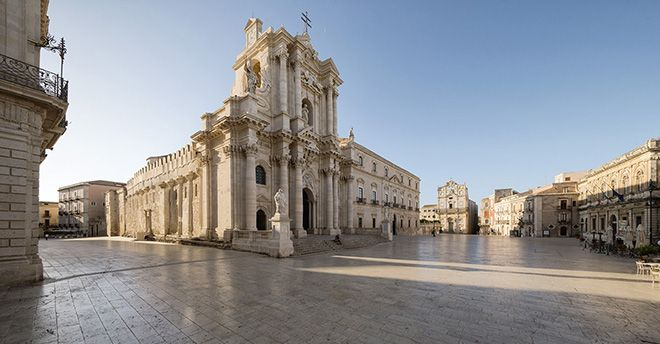

Piazza Duomo è la più importante piazza di Siracusa. Sorge nella parte alta dell'isola di Ortigia e rappresenta il simbolo della ricostruzione barocca dopo il terremoto del 1693.Considerata fin dall'antichità come il luogo sacro della città, la Piazza è dominata dalla Cattedrale della Natività di Maria Santissima. Altri edifici civili e religiosi si affacciano sulla Piazza, facendo di questo ambiente urbano il fulcro del potere civile e religioso di Siracusa.
La presenza, nel medesimo spazio urbano, dei più importanti edifici civili e religiosi della città, primi tra tutti la Cattedrale e il Palazzo Municipale, sta ad indicare la perfetta armonia tra il potere civile e religioso nella società siracusana del passato e del presente. Offre, così, una prospettiva del tutto particolare per ammirare la bellezza dell'architettura tardo barocca locale e cogliere il fascino della ricchezza economica e culturale che ha contraddistinto la società settecentesca di Siracusa.
Negli Archivi fotografici dell'Istituto Centrale per il Catalogo e la Documentazione (ICCD) di Roma, sono conservate delle cartoline del primo Novecento che ritraggono la Piazza Duomo, mettendo in evidenza la maestosità e l'eleganza di questo spazio urbano.

